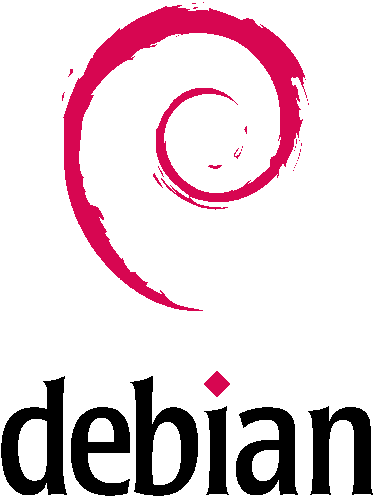

VirtualBox

Logiciel de Virtualisation Gratuit de Oracle. C'est dans ce "virtualiseur" que nous installerons notre serveur Linux et le serveur de téléphonie sur IP.
Vous pouvez télécharger VirtualBox 5.xx :
Debian

Distribution Linux que nous utiliserons durant tout notre TP.
Vous pouvez télécharger Debian :
Asterisk

Le moteur de téléphonie sur IP OpenSource qui nous permettra de découvrir le fonctionnement du protocole SIP.
Nous installerons Asterisk grâce au système de gestion de paquets de Debian